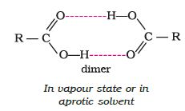
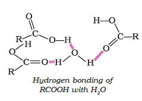

Aliphatic carboxylic acids upto nine carbon atoms are colourless liquids at room temperature with unpleasant odours. The higher acids are wax like solids and are practically odourless due to their low volatility. Carboxylic acids are higher boiling liquids than aldehydes, ketones and even alcohols of comparable molecular masses. This is due to more extensive association of carboxylic acid molecules through intermolecular hydrogen bonding. The hydrogen bonds are not broken completely even in the vapour phase. In fact, most carboxylic acids exist as dimer in the vapour phase or in the aprotic solvents.

Simple aliphatic carboxylic acids having upto four carbon atoms are miscible in water due to the formation of hydrogen bonds with water. The solubility decreases with increasing number of carbon atoms. Higher carboxylic acids are practically insoluble in water due to the increased hydrophobic interaction of hydrocarbon part. Benzoic acid, the simplest aromatic carboxylic acid is nearly insoluble in cold water. Carboxylic acids are also soluble in less polar organic solvents like benzene, ether, alcohol, chloroform, etc.